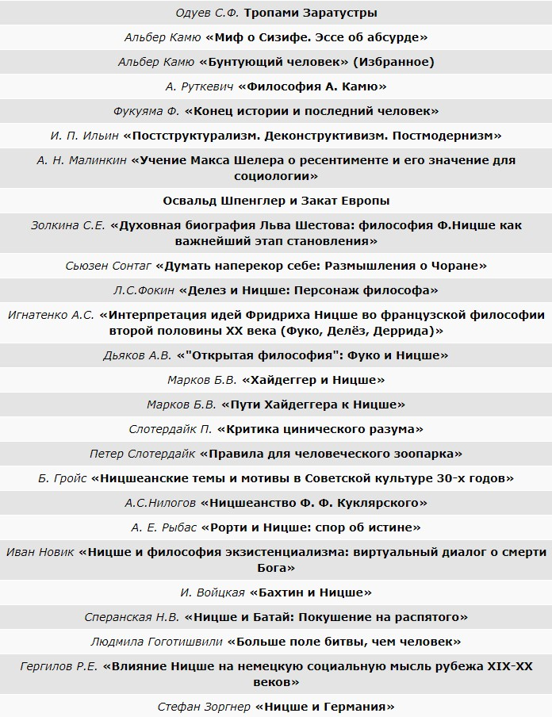

Культурное наследие
Памятник
Памятник немецкому философу Фридриху Ницше расположен в сквере «Holzmarkt» в Наумбурге. После смерти своего отца в 1849 Фридрих Ницше жил в этом городе с 1850 по 1856. Его бывший дом сейчас превращён в музей.
Культурное наследие
Памятник немецкому философу Фридриху Ницше расположен в сквере «Holzmarkt» в Наумбурге. После смерти своего отца в 1849 Фридрих Ницше жил в этом городе с 1850 по 1856. Его бывший дом сейчас превращён в музей.
Дом-музей Фридриха Ницше (Nietzsche-Haus) – один из музеев немецкого города Наумбург, расположенного в федеральной земле Саксония-Анхальт. Музей посвящен известному немецкому мыслителю, создателю широко распространенного философского учения, Фридриху Ницше (1844-1900), который провел в этом доме свои детские и юношеские годы, а затем здесь же находился на попечении матери (до её смерти) в последние годы жизни (с 1890 по 1897), будучи тяжелобольным.
В этом доме с 1858 по 1897 годы жила Франциска Ницше, которая вместе с двумя детьми – Фридрихом и Елизаветой, переехала в Наумбург из Рёккена через год после смерти мужа – пастора приходской церкви Карла Людвига Ницше. В Наумбурге Фридрих Ницше посещал начальную школу и гимназию при Наумбургском соборе святых Петра и Павла (Domgymnasium). В 1858 году он получил бесплатное место в знаменитой, существующей и сегодня, немецкой гимназии «Пфорта» (Pforta/Schulpforta), расположенной близ Наумбурга в здании бывшего цистерцианского монастыря (существовавшего с 1137 по 1540 годы и упраздненного с началом эпохи Реформации). Но и во время обучения в Пфорте, Фридрих приезжал в дом матери – только здесь он находил душевный покой.
Фридрих Ницше оказал большое влияние на различных философов 20 века.
Влияние на 20 век в целом Мысль Ницше оказала глубокое влияние в 20-м веке, особенно в континентальной Европе. В англоязычных странах его приняли менее резонансно. В течение последнего десятилетия жизни Ницше и первого десятилетия 20-го века его мысль была особенно привлекательна для художников-авангардистов, которые видели себя на периферии устоявшейся социальной моды и практики. Ницше выступал за пропаганду новых, здоровых начинаний и творческого мастерства в целом. Его тенденция искать объяснения общепринятым ценностям и взглядам в менее возвышенных сферах инстинкта чистого животного также имела решающее значение для развития психоанализа Зигмунда Фрейда. Позже, в 1930-х годах, аспекты мысли Ницше были поддержаны нацистами и итальянскими фашистами, отчасти благодаря поддержке Элизабет Фёрстер-Ницше через ее связи с Адольфом Гитлером и Бенито Муссолини. Нацистские переводчики могли довольно избирательно собирать различные отрывки из произведений Ницше, чье сопоставление, по-видимому, оправдывало войну, агрессию и господство ради националистического и расового самовосхваления. До 1960-х годов во Франции Ницше обращался в основном к писателям и художникам, поскольку в академическом философском климате доминировали мысли Гегеля, Эдмунда Гуссерля и Мартина Хайдеггера. Ницше стал особенно влиятельным во французских философских кругах в 1960–1980-х годах, когда его декларация «Бог мертв», его перспективизм и его акцент на власти как действительном мотиваторе и объяснении действий людей открыли новые способы бросить вызов устоявшейся власти и запустить эффективный социальная критика. В англоязычном мире неудачная связь Ницше с нацистами удерживала его от серьезных философских размышлений до 1950-х и 60-х годов, когда такие выдающиеся работы, как работы Вальтера Кауфмана, «Ницше: философ, психолог, антихрист» (1950) и Артура К. Данто «Ницше как философ» (1965) проложили путь к более открытой дискуссии. Конкретные фигуры 20-го века, на которых Ницше оказал значительное или значительное влияние, включают художников, танцоров, музыкантов, драматургов, поэтов, романистов, психологов, социологов, теоретиков литературы, историков и философов: Альфред Адлер, Жорж Батай Мартин Бубер, Альбер Камю, Э. М. Чоран, Жак Деррида, Жиль Делёз, Айседора Дункан, Мишель Фуко, Зигмунд Фрейд, Стефан Георге, Андре Жид, Герман Гессе, Карл Юнг, Мартин Хайдеггер, Густав Малер, Андре Мальро, Томас Манн, Менкен, Райнер Мария Рильке, Жан-Поль Сартр, Макс Шелер, Джованни Сегантини, Джордж Бернард Шоу, Лев Шестов, Георг Зиммель, Освальд Шпенглер, Ричард Штраус, Пауль Тиллих, Фердинанд Теннис, Мэри Вигман, Уильям Батлер Йейтс и Стефан Цвейг. То, что Ницше мог писать так много, оставаясь в плохом состоянии и часто испытывая сильную физическую боль, является свидетельством его впечатляющих умственных способностей и силы воли. Меньшие люди, испытывающие такое же физическое давление, могли не иметь склонности брать ручку, не говоря уже о том, чтобы думать и записывать мысли, которые - созданные в процессе стремления к здоровому самопреодолению - могли бы влиять на целое столетие.